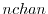
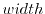

Next: Setting Up UVWRITE - Up: UV Data Sets Previous: When Do UV Variables
Note that the set-up given by uvset only becomes correctly activated during the next call to uvread. Before this next call, the setup is in a somewhat nebulous state. So you should not expect various other routines associated with uvread to work as expected until after the next call to uvread. Associated routines include uvflgwr and uvinfo.
Table 2.2 summarizes the possible values of the arguments to uvset.
Here the column titled ``Object'' and ``Type'' are the possible string
values that object and type can take on. The third column
gives the meaning for the parameters n,p1,p2,p3.
Dashes in the third column indicate that the arguments value is ignored in
this particular call. While several processing can be performed
simultaneously (several calls to uvset will be needed to specify them
all), others are mutually inconsistent. When mutually inconsistent
steps are requested, the last requested step is honored. Each processing
step requires further explanation.
object='data'type='channel', uvread will
return  massaged channels, where channel of the massaged channels
is formed by averaging  channels of the original data, starting at
channel
type='wide' is similar, but
uses the continuum data rather than the spectral data.
type='velocity' is also
similar, returning a weighted sum of the spectral data. However in this
case , and are given in units of
km/s (rather than channels). This is particularly useful if the
spectrometer setup is not constant throughout the data or there is no
Doppler tracking, and so the velocity of a given channel changes.
Note that 'channel', 'wide' and 'velocity' are
mutually exclusive. The default is 'channel' (or wide if there is
no spectral data in the file), with start,increment
and width of 1.
If there are fewer than channels, then dummy channels, which are flagged as bad, are added. If is specified as 0, then uvread will return as many channels as possible.
object='reference'object='data', except
that the number of channels, and the increment is ignored (there is only ever
one reference line). The default is not to have a reference line.
object='coord'object='planet'object='selection'Miriad manager